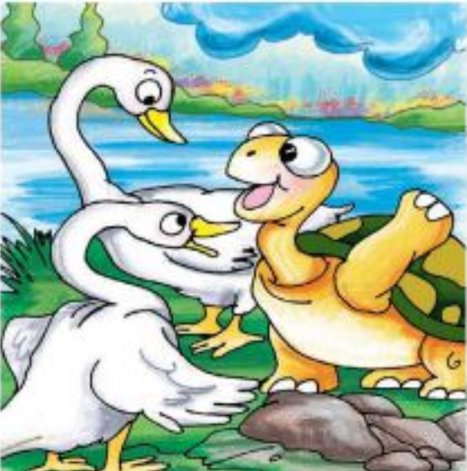
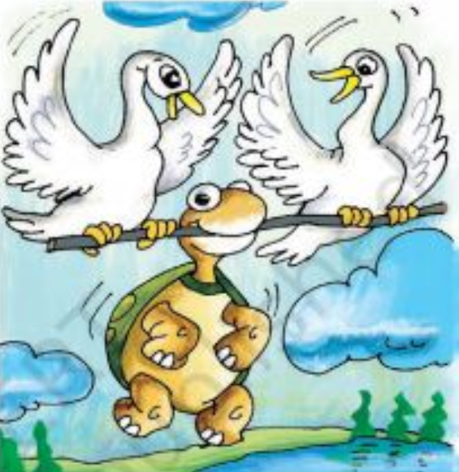
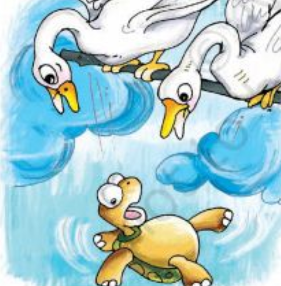

THE TALKATIVE TURTLE

Once, in a certain lake, there lived a turtle and a pair of swans. The
turtle and the swans were friends. They would spend all their free
time together telling each other stories, and exchanging news and
gossip. The turtle especially loved to talk and chatter, and always
had something to say. One year, the rains did not come, and the lake
began to dry up. The swans became worried. Supposing it did not rain
at all, and the lake dried up completely? Where would they live in
that case? But the turtle had a plan. She suggested that the swans fly
in search of a lake that still had plenty of water. Once they found
such a lake, all three of them could move there. The swans agreed and
flew off.

After flying for several hours they found the perfect lake. They
returned to the turtle with the good news. But now another problem
arose: the new lake was too far for the turtle to walk. How was the
turtle to get there? The swans did not want to leave their friend
behind. The turtle thought for a while and came up with another plan.
She asked the swans to find a strong stick that they could hold in
their beaks. The turtle would then hang on to the stick with her
mouth, and the swans could fly with her to the new lake. The swans
liked the idea, though they were worried that the turtle might begin
talking and fall off the stick. ‘You must be careful not to open your
mouth while we are flying with you,’ they warned her. ‘Do you think
you will be able to be quiet for such a long time?’

‘Of course,’ said the turtle. ‘I will be careful. I know when to stop
talking.’ So the swans did as she asked. They found a strong stick and
each swan held one end of it in its beak. The turtle held on to the
middle with her mouth, and away they flew, all three of them. It was
the most exciting thing that had ever happened to the turtle. She was
amazed at the way the world looked so far above the ground. She was
longing to say something, but remembered in time to keep quiet. At
last they reached the lake the swans had found. It was a beautiful
lake, large and blue, with plenty of water. ‘Oh look!’ the turtle
began in excitement, remembering much too late to keep quiet. The
stick slipped from her mouth and down she fell from the sky onto the
rocks below. The swans were sad to see the end of their friend – the
turtle did not live to enjoy the lake, only because she did not know
when to stop talking.
MORAL:- ONE SHOULD ONLY SPEAK AT THE RIGHT MOMENT